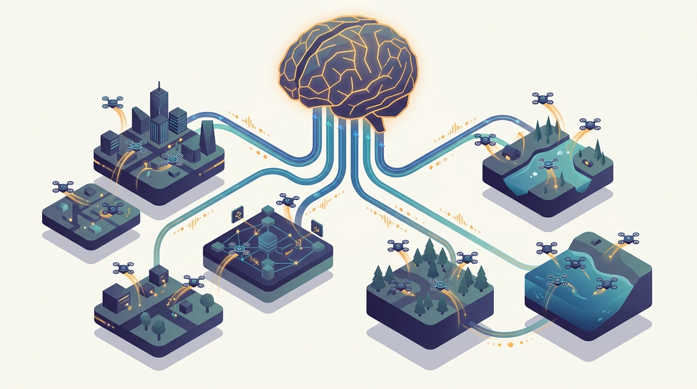

"I generate my own training data, which sounds empowering until you realize it means the dataset is always one policy version out of date, the buffer is always either starving or overflowing, and somewhere a learner is waiting on me while I wait on an environment that just reset."
An Actor One Policy Version Behind
A distributed reinforcement learning system is two interleaved workloads, rollout and learning, that must be kept in throughput balance across a cluster: actors generate experience by running the current policy against an environment, learners consume that experience to improve the policy, and the binding constraint is never one component in isolation but the coupling that keeps sampling and learning saturating each other rather than starving or flooding. This is the chapter where the data pipeline stops being a thing that arrives and becomes a feedback loop the model itself drives. The collective communication of Chapter 4 reappears as the broadcast that ships fresh policy weights from learner to actors and the all-reduce that aggregates learner gradients; the distributed optimization of Chapter 10 is what runs inside the learner once experience arrives; and the data-parallel step of Chapter 15 is what scales the learner itself when one accelerator can no longer keep up with the actors feeding it. What is genuinely new here is the asymmetry. In supervised training every worker does the same thing on a different shard of a static dataset; in RL the actors and the learner do fundamentally different jobs, on different hardware, at different rates, communicating through a buffer rather than a barrier. That asymmetry forces every design decision in the chapter. Experience collection has to be parallelized across hundreds of actors and many environments per actor to feed a hungry learner. Replay buffers have to be distributed and sampled, often with priority, so that the learner sees the most useful transitions without becoming a bottleneck. Off-policy correction has to repair the staleness that is unavoidable the moment an actor runs a policy older than the one the learner now holds, which is the price of decoupling the two pipelines. The landmark systems, Ape-X with its distributed prioritized replay, R2D2 with recurrent state across a distributed buffer, and SEED RL with its centralized-inference rearrangement, are each a different answer to the same throughput-balance question. And the synchronous-versus-asynchronous choice decides whether the cluster runs in lockstep with reproducible updates or runs flat out with stale gradients, a tradeoff between statistical efficiency and hardware utilization that recurs through the rest of the book. The thesis the chapter serves is the book's spine in a new key: at scale, learning to act is not an algorithm running on one machine, it is a distributed system whose two halves must be engineered to keep each other fed.
Chapter Overview
This is the sixth chapter of Part IV, and it takes the parallelism machinery the part has built and points it at a workload that does not look like any other in the book. Chapters 15 through 18 scaled a single supervised objective across many machines: every worker computed the same kind of thing on a different slice of fixed data, and the previous chapter composed all of it into one frontier pre-training run. Reinforcement learning refuses that symmetry. The data is generated on the fly by the very model being trained, the workers split into two populations doing different jobs at different rates, and the system succeeds or fails on whether those two populations keep each other saturated. The binding constraint is no longer a single resource but the balance between sampling throughput and learning throughput, because at this scale the bottleneck is whichever of the two pipelines is currently falling behind, and the cost of getting it wrong is idle accelerators or wasted experience.
The nine sections fall into four movements. The first frames the problem and names the architecture: Section 20.1 establishes why RL is a distributed-systems problem rather than an algorithm that happens to run on a cluster, and Section 20.2 introduces the actor-learner architecture that splits rollout from learning and becomes the template for everything that follows. The second movement builds the experience pipeline: Section 20.3 parallelizes experience collection across many actors and environments, Section 20.4 distributes the replay buffer that decouples actors from learners, and Section 20.5 develops the off-policy correction that repairs the staleness decoupling introduces. The third movement studies the landmark systems and the scheduling axis: Section 20.6 walks through the Ape-X, R2D2, and SEED RL designs as three answers to the throughput question, and Section 20.7 weighs synchronous against asynchronous RL systems. The fourth movement makes it concrete: Section 20.8 analyzes the sampling-versus-learning bottleneck head on, and Section 20.9 surveys the frameworks that ship distributed RL in practice.
Read in order, the nine sections take you from "RL is a distributed system, not a single-machine algorithm" to "you can architect the actor-learner split, parallelize experience collection into a distributed replay buffer, correct for the off-policy staleness that decoupling creates, recognize the landmark designs that solved it, choose synchronous or asynchronous execution deliberately, and diagnose whether your system is sampling-bound or learning-bound." The argument is cumulative: the actor-learner split creates the two pipelines, experience collection and replay connect them, off-policy correction makes the connection sound, the landmark systems show the connection done well, and the throughput analysis tells you which half to fix when the whole thing stalls.
Prerequisites
This chapter assumes the parallelism and communication machinery of the earlier parts. From Chapter 4: Communication Primitives for Distributed Training you carry the broadcast and all-reduce collectives that ship policy weights out to the actors and aggregate gradients inside the learner, because the actor-learner loop is a communication pattern before it is a learning rule. From Chapter 10: Distributed Optimization you carry the synchronous and asynchronous update models, staleness, and the statistical-efficiency-versus-utilization tradeoff that reappear here as the synchronous-versus-asynchronous RL choice. From Chapter 15: Data-Parallel Deep Learning you carry the data-parallel step that scales the learner itself once a single accelerator can no longer keep up with the experience the actors produce. The chapter assumes comfortable Python and PyTorch and the standard reinforcement-learning vocabulary of policies, value functions, returns, and on-policy versus off-policy learning, but no prior experience with a distributed RL stack. Section 20.1 builds the systems framing from the ground up before any single component is detailed.
Learning Objectives
- Explain why reinforcement learning at scale is a distributed-systems problem, framing it as two interleaved workloads, rollout and learning, that must be kept in throughput balance.
- Describe the actor-learner architecture, identifying what runs on the actors, what runs on the learner, and how policy weights and experience flow between them.
- Architect distributed experience collection across many actors and multiple environments per actor to feed a learner that would otherwise starve.
- Design a distributed replay buffer that decouples actors from learners, including prioritized sampling and the engineering that keeps the buffer from becoming the bottleneck.
- Apply off-policy correction methods such as V-trace to repair the policy staleness that decoupling rollout from learning makes unavoidable.
- Compare the Ape-X, R2D2, and SEED RL designs as distinct answers to the sampling-versus-learning throughput question, including distributed prioritized replay, recurrent state, and centralized inference.
- Weigh synchronous against asynchronous RL systems, reasoning about reproducibility, gradient staleness, and accelerator utilization.
- Diagnose whether a distributed RL system is sampling-bound or learning-bound, and reason about how to rebalance the two pipelines.
- Map the practical frameworks, including Ray and RLlib, onto the actor-learner abstractions developed in the chapter.
If you keep one thing from this chapter, keep this: a distributed reinforcement learning system is two interleaved workloads, actors that generate experience and learners that consume it, and every design in the chapter, from the actor-learner split through replay, off-policy correction, and the landmark Ape-X, R2D2, and SEED RL systems, exists to keep sampling throughput and learning throughput in balance so the cluster neither starves its learners nor wastes its actors' experience. Read forward, the sections build the system in the order it is actually assembled: first the framing and the actor-learner split that creates the two pipelines, then the experience collection and replay that connect them, then the off-policy correction that makes that connection sound, then the landmark designs and the synchronous-versus-asynchronous choice, and finally the throughput analysis that tells you which half to fix. Read as a question, the chapter asks of any RL system at scale: how do you split rollout from learning, how do you move experience from hundreds of actors into a learner without either side stalling, how do you correct for the staleness that decoupling creates, and how do you tell whether the thing is sampling-bound or learning-bound when it slows down. The roadmap below walks the nine sections that answer it.
Chapter Roadmap
- 20.1 Why RL Is a Distributed-Systems Problem Establishes reinforcement learning at scale as two interleaved workloads, rollout and learning, whose throughput balance, not any single algorithm, is the binding constraint that the rest of the chapter engineers around.
- 20.2 The Actor-Learner Architecture Introduces the architecture that splits rollout from learning, defining what runs on the actors, what runs on the learner, and how policy weights flow out while experience flows back.
- 20.3 Distributed Experience Collection Parallelizes experience generation across many actors and multiple environments per actor, sustaining the sampling throughput a hungry learner needs and reasoning about the rate it must hit.
- 20.4 Distributed Replay Buffers Builds the distributed buffer that decouples actors from learners, covering prioritized sampling and the engineering that keeps the buffer from becoming the system's bottleneck.
- 20.5 Off-Policy Correction at Scale Develops the correction, V-trace and its relatives, that repairs the policy staleness which becomes unavoidable the moment an actor runs an older policy than the learner now holds.
- 20.6 Ape-X, R2D2, and SEED RL Designs Maps practical RL stacks onto actor-learner abstractions; introduces GRPO, the critic-free policy-gradient algorithm behind DeepSeek-R1, and reinforcement learning with verifiable rewards (RLVR) as the 2025 frontier for training reasoning models at distributed scale.
- 20.7 Synchronous vs Asynchronous RL Systems Weighs lockstep synchronous execution against flat-out asynchronous execution, trading reproducibility and statistical efficiency against gradient staleness and accelerator utilization.
- 20.8 Scaling Bottlenecks: Sampling vs Learning Throughput Analyzes head on whether a system is sampling-bound or learning-bound, and reasons about how to rebalance the two pipelines so neither starves nor floods the other.
- 20.9 Frameworks and Practice Maps the practical stacks, Ray and RLlib among them, onto the actor-learner abstractions of the chapter, showing how a few lines stand in for the infrastructure built by hand.
Read the nine sections in order and you will hold a working blueprint for an RL system that scales: Section 20.1 frames the two-workload problem, Section 20.2 names the actor-learner split that structures it, Sections 20.3 through 20.5 build the experience pipeline that connects the two halves and correct the staleness it introduces, Section 20.6 studies the landmark systems that did it well, Section 20.7 chooses synchronous or asynchronous execution, and Sections 20.8 and 20.9 diagnose the throughput balance and map it onto real frameworks. The thread to watch is the rest of the book reappearing as load-bearing infrastructure: the Chapter 4 broadcast and all-reduce inside the actor-learner loop, the Chapter 10 staleness analysis inside the synchronous-versus-asynchronous choice, and the Chapter 15 data-parallel step scaling the learner once the actors outrun it.
What's Next?
This chapter built the infrastructure that trains a single policy by keeping its actors and learners in throughput balance, but it treated the learning algorithm and its hyperparameters as given: the discount factor, the replay priority exponent, the actor-to-learner ratio, and the off-policy correction settings all arrived fixed. The next chapter relaxes that assumption. Chapter 21: Distributed Hyperparameter Search and AutoML turns to the setting where the configuration itself is the thing being searched, where many training runs proceed in parallel and a scheduler decides which to continue and which to stop, and where the distributed-systems problem becomes orchestrating a population of experiments rather than a single run. The actor-learner cluster you just built is exactly the kind of expensive trial such a search must allocate carefully; Chapter 21 develops the population-based methods, the early-stopping schedulers, and the AutoML loops that decide how to spend a finite compute budget across many candidate configurations. Read it next, and watch a single training run become one point in a search the cluster runs over the space of all of them.
Bibliography & Further Reading
Foundational Actor-Learner Architectures
Mnih, V., Badia, A. P., Mirza, M., Graves, A., Lillicrap, T. P., Harley, T., Silver, D., Kavukcuoglu, K. "Asynchronous Methods for Deep Reinforcement Learning (A3C)." arXiv:1602.01783, 2016. arxiv.org/abs/1602.01783
The paper that popularized asynchronous parallel actors sharing a single learner, the conceptual root of the actor-learner architecture developed in Section 20.2.
Espeholt, L., Soyer, H., Munos, R., Simonyan, K., Mnih, V., Ward, T., Doron, Y., Firoiu, V., Harley, T., Dunning, I., Legg, S., Kavukcuoglu, K. "IMPALA: Scalable Distributed Deep-RL with Importance Weighted Actor-Learner Architectures." arXiv:1802.01561, 2018. arxiv.org/abs/1802.01561
The architecture that decouples acting from learning at scale and introduces V-trace, the direct reference for the off-policy correction of Section 20.5.
Espeholt, L., Marinier, R., Stanczyk, P., Wang, K., Michalski, M. "SEED RL: Scalable and Efficient Deep-RL with Accelerated Central Inference." arXiv:1910.06591, 2019. arxiv.org/abs/1910.06591
The redesign that moves inference onto the central learner to keep accelerators saturated, one of the three landmark systems studied in Section 20.6.
Distributed Replay and Experience Collection
Horgan, D., Quan, J., Budden, D., Barth-Maron, G., Hessel, M., van Hasselt, H., Silver, D. "Distributed Prioritized Experience Replay (Ape-X)." arXiv:1803.00933, 2018. arxiv.org/abs/1803.00933
The system that separates many actors from a central prioritized buffer, the canonical reference for the distributed replay of Section 20.4 and Section 20.6.
Kapturowski, S., Ostrovski, G., Quan, J., Munos, R., Dabney, W. "Recurrent Experience Replay in Distributed Reinforcement Learning (R2D2)." ICLR 2019. openreview.net/forum?id=r1lyTjAqYX
The design that handles recurrent state across a distributed replay buffer, the second of the three landmark systems compared in Section 20.6.
Schaul, T., Quan, J., Antonoglou, I., Silver, D. "Prioritized Experience Replay." arXiv:1511.05952, 2015. arxiv.org/abs/1511.05952
The method that samples transitions by learning value rather than uniformly, the priority mechanism distributed across actors in Section 20.4.
Policy Optimization Algorithms
Schulman, J., Wolski, F., Dhariwal, P., Radford, A., Klimov, O. "Proximal Policy Optimization Algorithms (PPO)." arXiv:1707.06347, 2017. arxiv.org/abs/1707.06347
The widely used policy-gradient method whose clipped objective tolerates the mild off-policy data a distributed actor-learner system produces, referenced in Sections 20.5 and 20.7.
Frameworks and Distributed Execution
Moritz, P., Nishihara, R., Wang, S., Tumanov, A., Liaw, R., Liang, E., Elibol, M., Yang, Z., Paul, W., Jordan, M. I., Stoica, I. "Ray: A Distributed Framework for Emerging AI Applications." arXiv:1712.05889, OSDI 2018. arxiv.org/abs/1712.05889
The distributed execution framework whose task-and-actor model underlies much of the practical RL infrastructure surveyed in Section 20.9.
Liang, E., Liaw, R., Nishihara, R., Moritz, P., Fox, R., Goldberg, K., Gonzalez, J. E., Jordan, M. I., Stoica, I. "RLlib: Abstractions for Distributed Reinforcement Learning." arXiv:1712.09381, 2018. arxiv.org/abs/1712.09381
The library that gives distributed RL a small set of composable abstractions, the primary framework mapped onto the chapter's concepts in Section 20.9.
Distributed RL for Language-Model Alignment
Hu, J., Wu, X., Zhu, Z., Xianyu, Wang, W., Zhang, D., Cao, Y. "OpenRLHF: An Easy-to-Use, Scalable and High-Performance RLHF Framework." arXiv:2405.11143, 2024. arxiv.org/abs/2405.11143
A distributed framework that applies the actor-learner pattern to RLHF for large language models, connecting Section 20.9 back to the alignment of Chapter 19.
Sheng, G., Zhang, C., Ye, Z., Wu, X., Zhang, W., Zhang, R., Peng, Y., Lin, H., Wu, C. "HybridFlow: A Flexible and Efficient RLHF Framework (veRL)." arXiv:2409.19256, 2024. arxiv.org/abs/2409.19256
A framework that flexibly places generation and training across devices to keep an RLHF cluster balanced, a modern instance of the throughput problem of Section 20.8.